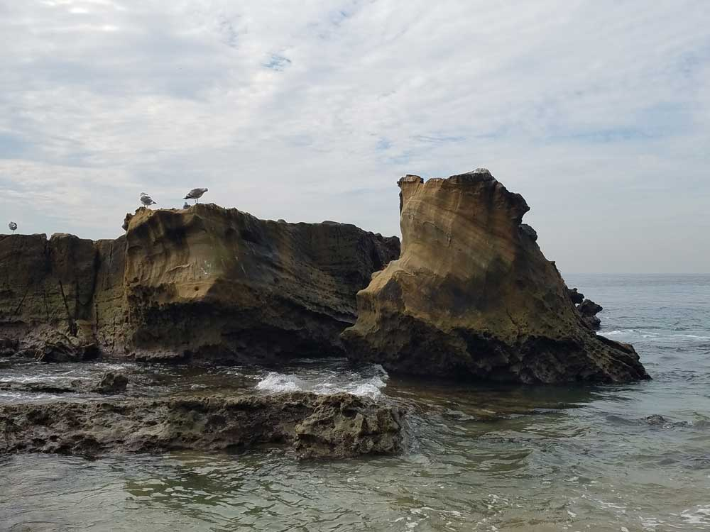
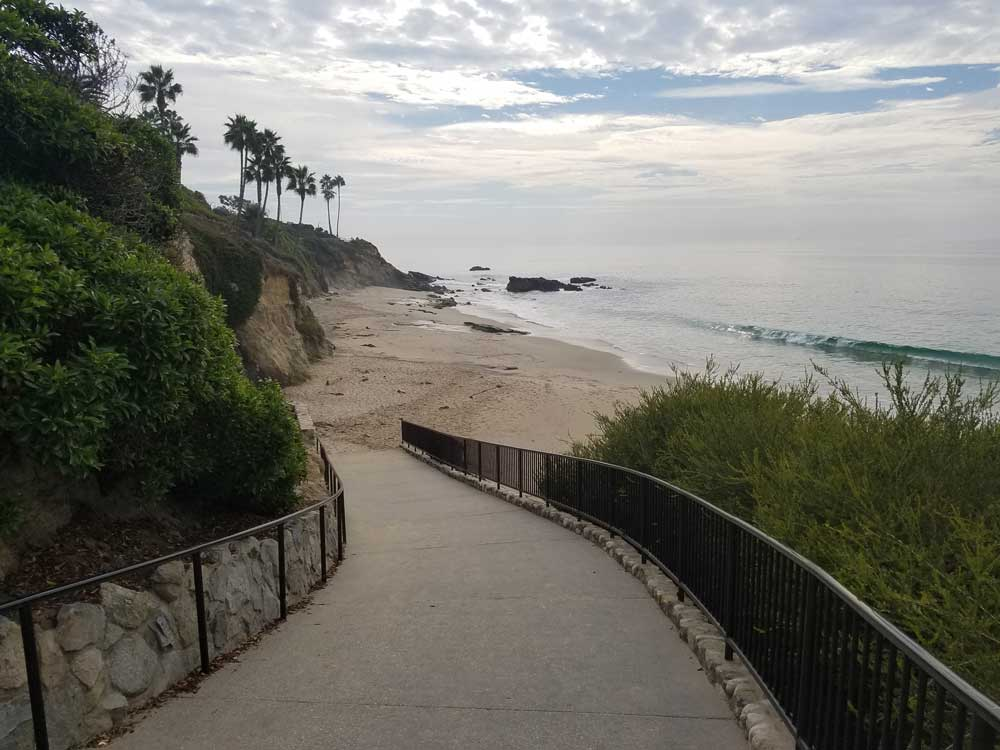
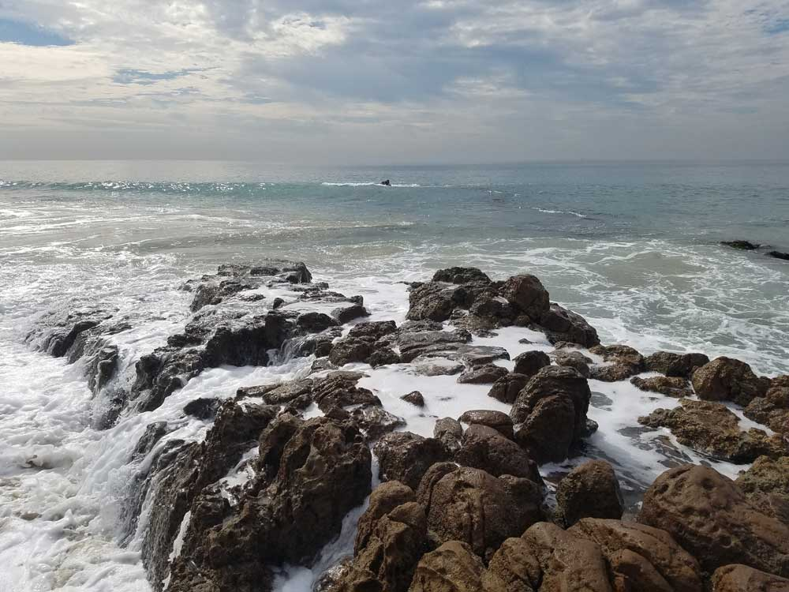

Seaside resort city with 7 miles (11 km) long coastline and includes 27 beaches and coves
General Information
How to Get There
From Irvine, CA (15 mi): Take I-5 South to CA-133 South (Laguna Canyon Road), continue directly into Laguna Beach, and follow Coast Highway through the downtown village and beachfront districts.
Overview
Laguna Beach is one of Southern California’s most beautiful coastal towns, with picturesque coves, sandy beaches, dramatic cliffs and more than 20 public beaches, plus a thriving arts scene of galleries, festivals and shops in an artists’ colony atmosphere. Its shoreline includes state marine reserves and tide pools, and about six million people visit each year. Hills, limited highway access and a greenbelt have kept it relatively isolated from urban sprawl.
Things to Do
Explore Heisler Park
Heisler Park is one of Laguna Beach's most popular oceanfront parks. The park features walking paths along coastal bluffs, public art installations, picnic areas, gardens, and spectacular viewpoints overlooking the Pacific Ocean. It is an ideal location for sightseeing, photography, and watching sunsets.
Discover the City's Vibrant Art Scene
Laguna Beach has long been recognized as one of California's leading arts communities. Visitors can explore numerous galleries, public art displays, artist studios, and the Laguna Art Museum, which focuses on California art from the nineteenth century through the present day.
Visit Crystal Cove State Park
Located adjacent to Laguna Beach, Crystal Cove State Park offers pristine beaches, tide pools, coastal bluffs, historic beach cottages, and extensive hiking opportunities. The park provides an outstanding combination of ocean recreation and outdoor adventure.
Explore Tide Pools and Marine Life
Many of Laguna Beach's coves and beaches feature excellent tide pools that can be explored during low tide. Popular locations include Thousand Steps Beach, Treasure Island Beach, and areas near Heisler Park, where visitors can observe sea stars, anemones, crabs, and other marine creatures.
Go Whale Watching and Wildlife Viewing
The waters off Laguna Beach provide year-round opportunities for viewing marine wildlife. Depending on the season, visitors may spot gray whales, blue whales, humpback whales, dolphins, sea lions, and a variety of seabirds along the coast.
Top Trails
Top of the World Trail
Length: Approximately 2.5 to 5 miles round trip depending on route
Elevation Gain: Moderate
Difficulty: Moderate
One of Laguna Beach's most famous hikes, this trail leads to panoramic viewpoints overlooking the Pacific Ocean, coastal canyons, Orange County, and the surrounding wilderness areas. The views are among the best in Southern California.
Crystal Cove Coastal Trail
Length: Approximately 2 miles round trip
Elevation Gain: Minimal
Difficulty: Easy
This scenic coastal trail follows oceanfront bluffs and provides outstanding views of beaches, coves, and the Pacific Ocean. It is a family-friendly route ideal for walking, photography, and wildlife observation.
West Ridge Trail
Length: Approximately 5.5 miles round trip
Elevation Gain: Moderate to Significant
Difficulty: Moderate
Located within Laguna Coast Wilderness Park, this popular trail offers expansive views of Laguna Beach, surrounding canyons, and the coastline. Seasonal wildflowers and diverse wildlife can often be observed along the route.
Aliso Peak Trail
Length: Approximately 3.5 miles round trip
Elevation Gain: Moderate
Difficulty: Moderate
This rewarding trail climbs to Aliso Peak, providing impressive ocean vistas and views of the surrounding coastal landscapes. It is particularly popular during spring wildflower season and for sunset hikes.
Geography
Its coastline is 7 mi (11 km) long and includes 27 beaches and coves. It is bordered by the Pacific Ocean on the southwest, Crystal Cove State Park and the city of Newport Beach on the northwest, Laguna Woods on the northeast, Aliso Viejo and Laguna Niguel on the east, and Dana Point on the southeast.
The land in and around Laguna Beach rises quickly from the shoreline into the hills and canyons of the San Joaquin Hills. The town's highest point, at an elevation of 1,007 feet, is Temple Hill in the Top of the World neighborhood. Because of its hilly topography and surrounding parklands, few roads run into or out of town; only the Coast Highway connecting to Newport Beach to the northwest and to Dana Point to the south, and State Route 133 crossing the hills in a northeastern direction through Laguna Canyon. Parts of Laguna Beach border the Aliso/Wood Canyons Regional Park.
The natural landscape of beaches, rocky bluffs, and craggy canyons have been noted as sources of inspiration for plein air painters and landscape photographers who have settled in the Laguna Beach since the early 1900s. The hills also are known internationally for mountain biking. Laguna Coast Wilderness Park is a 7,000-acre (2,800 ha) wilderness area in the hills surrounding Laguna Beach. This park features coastal canyons, ridgeline views, and the only natural lakes in Orange County. Wildlife that can be found on Laguna Beach includes the Lined Shore Crab, Black Oystercatchers, Barred Sand Bass, Spiny Lobsters and the Great White Egret.
The Laguna Art Museum is rooted in the development of Laguna Beach as an art community with the creation of the Laguna Beach Art Association in 1918. Located beside the main beach, the museum focuses on the art of California.
In popular culture
In 2004, MTV created a reality television show entitled Laguna Beach: The Real Orange County, which aired for three seasons.
Sources: Visit Laguna Beach official visitor information, including beaches, Heisler Park, public art, whale watching, cultural attractions, and recreational opportunities throughout Laguna Beach.
https://www.visitlagunabeach.com/things-to-do/100-things-to-do/
Additional information verified through Laguna Beach visitor resources and regional outdoor recreation guides covering Crystal Cove State Park, hiking trails, tide pools, wildlife viewing, beaches, and coastal activities.
https://www.visitlagunabeach.com/https://www.visitlagunabeach.com/
This article uses material from the Wikipedia article "Laguna Beach, California", which is released under the Creative Commons Attribution-Share-Alike License 3.0
Featured Location
Heisler Park
Scenic blufftop park overlooking the Pacific Ocean with landscaped gardens, walking paths, tide pools, and beach access points ideal for relaxation and coastal exploration.


